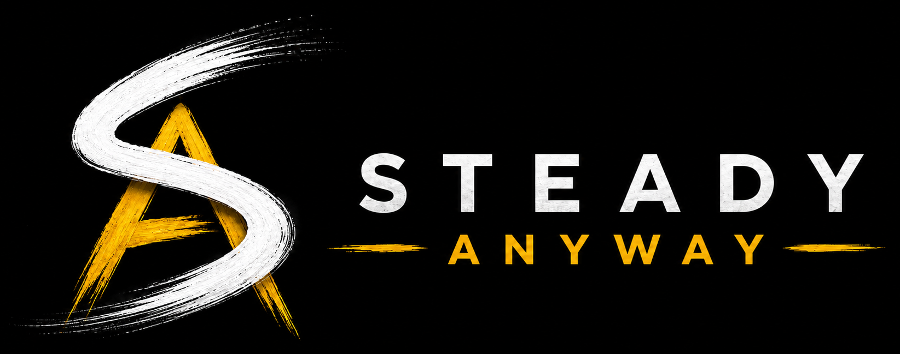

What it means
Staying steady is not about pretending life is easy. It is about choosing direction when pressure, stress, and uncertainty are all in the room.

Steady Anyway is hosted by Nick and made for real-life progress: the kind that shows up in your habits, your relationships, your work, and the way you keep going when things do not feel simple.
Staying steady is not about pretending life is easy. It is about choosing direction when pressure, stress, and uncertainty are all in the room.
Honest stories, practical takeaways, and conversations that leave space for health, work, family, discipline, purpose, and growth.
Because progress does not need shortcuts or perfection. It needs humility, repetition, and enough courage to take the next step.
No shortcuts. No perfection. Just steady progress.
- Nick